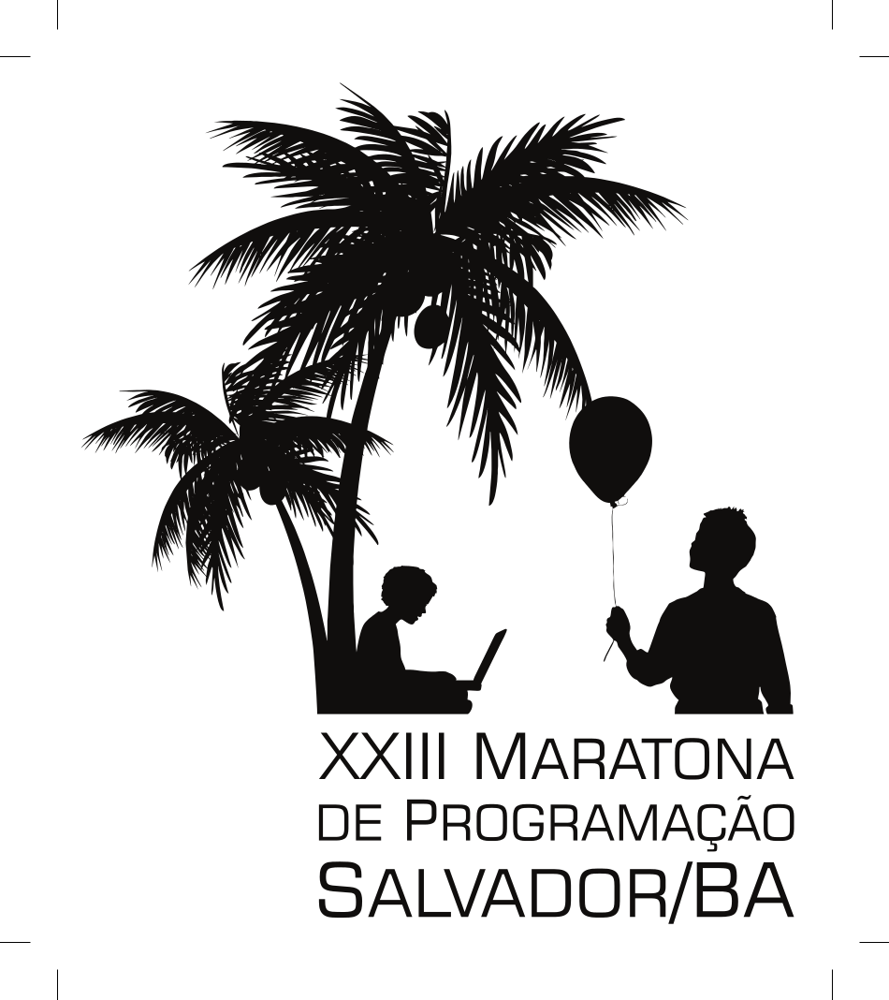

Primeira Fase: 15 de setembro de 2018
Final Brasileira: Salvador, 9 e 10 de novembro de 2018
 Resultados da Final Brasileira 2018
A final brasileira de 2018 foi realizada em Salvador, Bahia, com
realização do SENAI Cimatec e da Universidade Federal da Bahia. aOs diretores da final
brasileira são Caroline Paim (SENAI Cimatec), Rubisley Lemes (UFBA) e Mauricio Pamplona Segunda (UFBA).
Slides apresentados na abertura
A prova ocorreu no SENAI Cimatec, que acomodou
confortavelmente os 71 times times presentes. Os times visitaram o Projeto Tamar na Praia do Forte na véspera e tiveram uma excelente estadia na bela capital baiana.
Os problemas do warm-up. Folha de informações.
Tempos limite do warm-up.
Pacote do Boca com Entradas e saídas ( zip file) e autores dos
problemas:
- A - Hours and Minutes
Pablo Ariel Heiber, Argentina
- B - Braille
Vinicius Santos, Brasil
- C - Help Cupid
Pablo Ariel Heiber, Argentina
Problemas da competição.
Folha de informações.
Tempos limite.
Pacote do Boca com Entradas e saídas ( zip file) e autores dos
problemas:
- A - A Symmmetrical Pizza
Mario Silva, Brasil
- B - Building a Field
Ricardo Anido, Brasil
- C - Cheap Trips
Alejandro Strejilvich de Loma, Argentina
- D - Fatabase of Clients
Paulo Cezar Pereira Costa, Brasil
- E - Escape, Polygon!
Guilherme Albuquerque Pinto, Brasil
- F - Fantastic Beasts
Paulo Cezar Pereira Costa, Brasil
- G - Gathering Red-Black Fruis
Mario Silva, Brasil
- H - Highway Decommission
Arthur Nascimento, Brasil
- I - Ink Colors
Paulo Cezar Pereira Costa, Brasil
- J - Jeopardized Election
Edwin Niño Velasquez, Colômbia
- K - KryptoLocker Ate my Homework
Arthur Nascimento, Brasil
- L - Looking for the Risk Factor
Juan Pablo Marín Rosas, Mexico
- M - Mount Marathon
Inés Kereki, Uruguai
As pessoas abaixo ajudaram no desenvolvimento do conjunto de problemas
criando e aperfeiçoando os enunciados, soluções casos de teste e
checadores das entradas e saída:
Alejandro Strejilvich de Loma, Argentina;
Arthur Nascimento, Brasil;
Edwin Velasquez, Colômbia;
Guilherme Albuquerque Pinto, Brasil;
Iné Kereki;
Juan Pablo Marin Rosas, Mexico;
Mario Silva, Brasil;
Paulo Cezar Pereira Costa, Brasil; e
Ricardo Anido, Brasil.
Resultados da competição
Neste ano, todos os site da América Latina ocorreram
simultaneamente e todas as submissões foram julgadas pela
equipe de juízes. O resultado global da América Latina:
O time campeão da XXIII Maratona de Programação
2018 foi o time Time do dia 10 da Universidade
de São Paulo, campus São Carlos, formado por Lucas de Oliveira Pacheco,
Samuel Santos e Cezar Guimarães e pelo coach Danilo Tedeschi. É a segunda vez que uma equipe da
Universidade de São Paulo, São Carlos é campeã da Maratona
em 23 edições da competição. Será a
quinta vez que a USP-São Carlos representará o Brasil em
uma final mundial do ICPC.
Os times medalhistas foram:
- Medalhas de Ouro:
- USP-SC - Time do dia 10:
Lucas de Oliveira Pacheco, Samuel Santos e Cezar Guimarães coach Danilo
Tedeschi. Classificado para a final mundial
- UFPE - try again:
Tiago Gonçalves, Lucas Santana e Diogo Rodrigues, e coaches
Nivan Ferreira e Katia Guimarães.
Classificado para a final mundial
- UFCG - Megazord da CAPES:
Emerson Leonardo Lucena, Gustavo Bezerra Ribeiro, Arthur Vinicius
Tomé Rodrigues e coach Rohit Gheyi.
Classificado para a final mundial
- Medalhas de Prata:
- UnB - 100%
é Pouco, Pagode
Importa D+:
José Marcos Silva Leite, Luis Braga Gebrim Silva, Rafael
Chebab e pelos coaches Vinicius Borges, Matheus Pimenta e Pedro
Henrique Ferreira.
Classificado para a final mundial
- IME - Fast WA Transform
Rebeca Calazans de Brito, Mateus Lima de Castro e João Pedro de
Araújo Xavier, e pelos coaches Naum Azeredo e Claudia Justel.
Classificado para a final mundial
- ITA - CalopsITA: Lucas
França de Oliveira, Matheus Leão, Lucas Ferreira e coach Armando Gouveia.
Classificado para a final mundial
- Medalhas de Bronze:
- USP-SP - Meu patrão:
Gabriel Russo, Victor Sena, Victor Colombo e coaches Renzo Gomez e Yan
Couto.
- USP-SP - dog hits dog :
Gabriel Oliveira, Nathan Benedetto Proença, Pedro Sousa e coaches Renzo
Gomez e Yan Couto.
- UFPE - The AC is a lie:
Bezaliel Guimarães Gabriel Pessoa e Clodes Silva e coaches
Nivan Ferreira e Katia Guimarães.
- UFMG - LiXote dos Milagres:
Pedro Papa Paniago, Nicholas Reis e Marcos Fernandes e pelos coaches
Lucas Pereira e Mauricio Collares.
Abaixo todos os dados da competição:
Foram reconhecidos os campeões regionais:
- Centro-Oeste - UnB - 100%
é Pouco, Pagode
Importa D+:
José Marcos Silva Leite, Luis Braga Gebrim Silva, Rafael
Chebab e pelos coaches Vinicius Borges, Matheus Pimenta e Pedro
Henrique Ferreira.
- Nordeste - UFPE - try again:
Tiago Gonçalves, Lucas Santana e Diogo Rodrigues, e coaches
Nivan Ferreira e Katia Guimarães.
- Norte - UEA - Você é fraco, te
falta O(1): Wesley Rocha, Levi Lima e William Silva e coaches Marcela
Pessoa e Sergio Tamayo.
- Sudeste - USP-SC - Time do dia 10:
Lucas de Oliveira Pacheco, Samuel Santos e Cezar Guimarães coach Danilo
Tedeschi.
- Sul - UDESC - Travelling Balloonsmen:
Felipe Weiss, Felipe Marchi, Adilson Jonck Junior e coach Claudio
Sá.
Várias fotos, vídeos e muito da festa estão disponíveis na página da Maratona no
Facebook.
Além da competição oficial houve uma competição "café
com leite" com a participação de 11 equipes.
A
equipe "USPank" sagrou-se
campeã e era formada por Giovanna Kobus, Victor
Lamarca e Thiago Carvalho Pinto. A equipe "I was root": Stefano Tommasini,
Yan Couto e Antonio Roberto de Campos Junior ficou em segundo.
Os times classificados para a final mundial serão convidados a
fazer o curso de treinamento que ocorrerá em
janeiro de 2019 na Unicamp.
Last modified: Mon Nov 13 16:06:05 -02 2017
{kind=link}
{kind=link}
{kind=link}
{kind=link}
{kind=link}
{kind=link}
{kind=link}
{kind=link}
{kind=link}
{kind=link}
{kind=link}
{kind=link}
{kind=link}
{kind=link}
{kind=link}